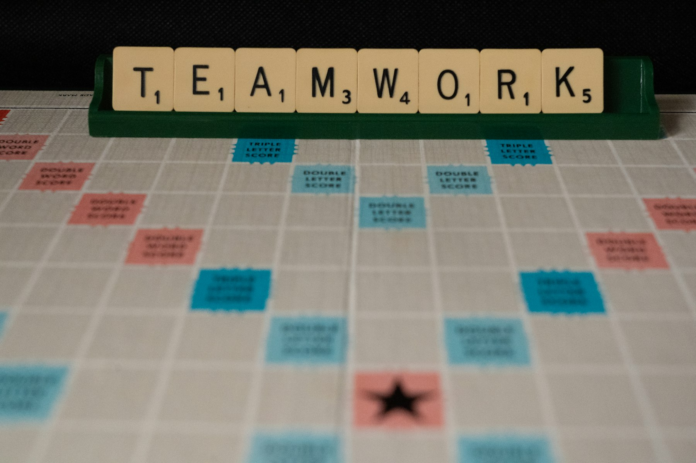
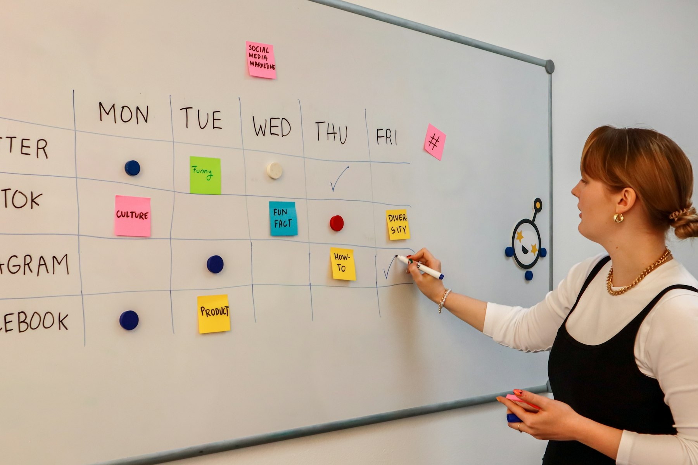

TL;DR
Start generating passive income with printables by setting up a shop on Etsy or Shopify. Research and design your niche products, and follow a structured 30-day launch plan. Avoid common mistakes like overpricing and optimize your sales strategy.
Busy Creators: Unlock Passive Income with Printables
If you’re a busy creator looking for a way to earn passive income, printables may be the answer. Think of planners on Etsy or engaging wall art sold on Shopify. With minimal effort, you can set up a system that generates income while you focus on other passions.
Printables require low startup costs, often less than $100 for design software and marketing expenses. Plus, there’s a vast market for printable products, allowing you to tap into high-demand niche areas.
Why Many Beginner Approaches Fail with Printables

Many aspiring creators dive into the printable market without understanding the nuances, leading to wasted time and money. A common pitfall is poor marketing strategies; simply listing products online isn’t enough.
For instance, if you upload a set of planner pages on Etsy without promoting them, you might only see a handful of views. A study shows that products with effective social media promotion can see a 30-50% increase in sales.
If you’re not utilizing platforms like Instagram or Pinterest, you're likely missing out on a significant audience.
Moreover, neglecting audience feedback can lead to creating products that don’t resonate. For example, consider a creator who designs a set of educational worksheets aimed at preschoolers.
If they don’t gather insights from educators or parents, they might end up with content that is either too challenging or too simple, leading to disappointing sales. Statistics indicate that 70% of new products fail because they don't meet market needs.
Taking an average timeframe of 2-3 weeks for market research can save months of stress later on. Meanwhile, if a creator skips this step and hastily launches a product based on what they believe is “popular,” they might find themselves with a stockpile of unsold printables a few months down the line—this can drain both enthusiasm and finances significantly.
This scenario often leaves a creator feeling demotivated, with initial costs of creating printables averaging between $100 to $500 for design software and marketing efforts.
One illustrative case is a designer who ventured into the landscape of printable wall art. They initially generated 50 designs and launched them all at once, hoping for a quick success.
However, due to a lack of targeted marketing and understanding their ideal customer's preferences, only 5 out of 50 designs sold in the first month. Frustrated, they pivoted, began engaging with potential customers through social media polls, and revamped their strategy based on real feedback.
Your Step-by-Step Workflow for Creating Printables
To build a successful printable business, follow this structured workflow:
- Identify Your Niche:
- Explore what’s selling; use tools like Pinterest or Etsy to understand trends.
2.
Design Your Products:
- Utilizing software like Canva or Adobe Illustrator, create multiple listings—think planners, stickers, or educational resources.
- Set Up a Sales Platform:
- Open an Etsy shop or create a Shopify store.
Listing on marketplaces exposes you to a ready audience.
- Implement Marketing Strategies:
- Use social media platforms such as Instagram for targeted ads. Social media presence can attract organic traffic to your products.
- Collect and Analyze Feedback:
- Regularly engage with your audience to refine your offerings. This can dramatically enhance your product appeal.
A 30-Day Journey to Your First Printable Launch

Launching your first printable can be broken down into a manageable 30-day timeline:
Week 1: Research and brainstorm ideas for your first product. Dive into trending topics; perhaps a meal planner for busy parents.
Week 2: Design your product, ensuring it’s visually appealing and user-friendly. Use templates to streamline this process. Test various price points; $5-$15 per printable is common.
Week 3: Set up your shop and listings. Start with five items to create a diverse offering. Begin your promotional efforts on Instagram by posting teasers.
Week 4: Launch your products! Initially, notify your close circle. Track performance metrics and audience engagement to adjust your strategies moving forward. Consider running limited-time promotions to kickstart sales.
Avoiding Common Pitfalls in Your Printable Business
While establishing your printable business, avoiding common pitfalls can significantly enhance your chances of success. One prevalent mistake is overpricing your products. For example, if you set a price of $15 for a monthly planner, it might deter budget-conscious customers when similar products are available for $8 to $10.
Instead, consider a price range that reflects your target audience’s willingness to spend, perhaps between $10 and $12, while adequately conveying the value through high-quality design and features.
Another misstep to watch for is neglecting SEO strategies. If you upload a beautiful watercolor calendar but title it “Untitled Design,” you risk being lost in a sea of similar products.
Optimizing titles and descriptions with keywords like “watercolor calendar printable” can help. Spend a little time researching keyword tools or even free options like Google Keyword Planner.
This effort can boost your visibility; for instance, a well-optimized listing might increase views by 50% in just a month and translate to higher sales.
Consider the scenario of Sarah, who launched a business selling educational printables aimed at teachers. Initially, she priced her resources too high at $20, thinking they were premium products.
Sales were dismal. After conducting a competitor analysis, she noticed that similar materials were around $10. By recalibrating her price to $12 and revamping her product descriptions to highlight the unique benefits, her sales quadrupled within two months.
Lastly, avoid the pitfall of failing to engage with your audience. If potential buyers leave comments or ask questions on your listings and you don’t respond, they may feel ignored and choose to shop elsewhere. Establish a routine to check and respond to inquiries daily. Ignoring this can result in lost interactions and sales, seriously affecting your passive income potential.
Next Steps: Expanding Beyond Printables
Once you've established your printable business, think about diversifying your income sources. Consider creating online courses around your niche expertise—tools like Teachable can facilitate this for you.
Alternatively, explore subscription models; offering exclusive content to your audience through Patreon encourages recurring income. This strategic shift not only enhances your earnings but allows you to nurture a community around your brand.
FAQ
What materials do I need to create printables?
You primarily need design software like Canva or Adobe Illustrator, and possibly a platform to sell like Etsy or Shopify.
How can I market my printables effectively?
Utilize social media platforms, run promotional ads, and engage with your audience to understand their needs.
This article has been reviewed for practical usefulness and is updated as new insights arise.
Next step
Use the article as a decision point, not just reading material. Your next system matters more than more browsing.
Search more articles
Find related tools, workflows, and guides.
Photo credits
- Photo 1: Pexels via Pixabay
- Photo 2: Nick Fewings via Unsplash
- Photo 3: Walls.io via Unsplash
- Photo 4: Walls.io via Unsplash
- Photo 5: Vitaly Gariev via Unsplash